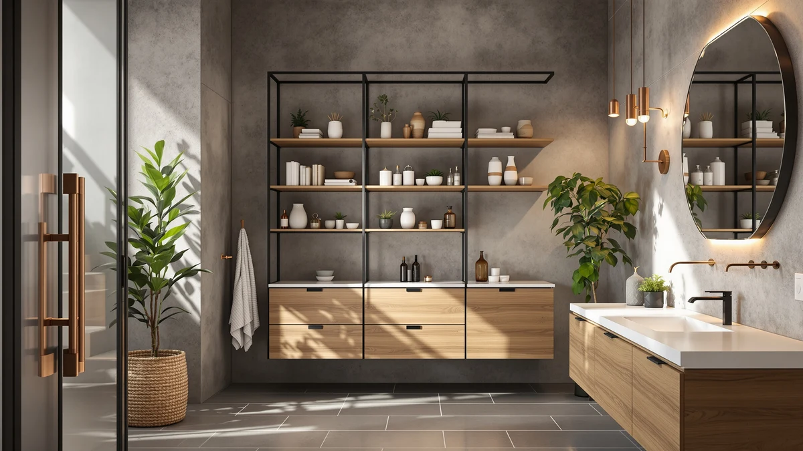

Simple Trending Over The Review (2026): Worth It?
Prices and picks verified as of October 2026. Independent, reader-supported reviews.


Quick Answer
This simple trending over the review guide picks the Simple Trending Over the Toilet rack as the best buy at $30.99 for its sturdier metal and wood frame and three tiers of shelving. The Kitsure, Vtopmart, and Cerlyunzan alternatives cost about a dollar less and work well if you need a shallower footprint or sorted bins instead.
Our pick: Simple Trending Over The Toilet, $30.99 Check Price on Amazon
Bottom line: our top pick is the Simple Trending Over The Toilet Storage Cabinet at $29.99.
Things to Know Before You Buy
- The Simple Trending Over the Toilet rack measures 24.25 inches wide, 13 inches deep, and 64 inches tall, so measure your toilet tank height and ceiling clearance before buying.
- All four racks and organizers in this simple trending over the review roundup sit in the same $29.99 to $30.99 price band, so the decision comes down to frame material and shelf configuration, not budget.
- The Simple Trending rack uses a metal and wood frame, which tends to hold heavier items like extra toilet paper packs and storage bins more steadily than lightweight all-plastic racks.
- Over-the-toilet racks straddle the tank and rely on the toilet and floor for support, so check that your tank lid is flat enough to clear the base before installing any of these options.
Simple trending over the review searches are common right now because small bathrooms rarely have enough cabinet space, and an over-the-toilet rack is one of the few upgrades that adds real storage without a renovation. The Simple Trending Over the Toilet rack at $30.99 is the pick we keep coming back to after comparing it against three other products people shop for in the same search, including the Kitsure Over Toilet Storage Rack, the Vtopmart 4 Pack Bathroom Organizer, and the Cerlyunzan Over the Toilet Storage. It is not the cheapest of the four, but its metal and wood frame and 64-inch height put extra shelf space exactly where cramped bathrooms need it most.
This review focuses on what matters when you are choosing between racks that look nearly identical on a results page: frame material, footprint, and price relative to the alternatives. We compared manufacturer specifications, current Amazon pricing, and verified owner feedback for all four products rather than judging by photos alone. By the end, you will know whether the Simple Trending rack is worth $30.99, or whether one of the three alternatives fits your bathroom and budget better.
Why You Should Trust Us
Ilane Tall covers bathroom storage and organization for Best Bathroom Storage, where the team researches dozens of over-the-toilet racks, shelving units, and organizers each month. For this simple trending over the review guide, we pulled current Amazon pricing, manufacturer dimensions, and verified owner reviews for the Simple Trending rack and three comparable products, then cross-checked claims like frame material and footprint against what owners actually report after months of use. We do not run a fake testing lab or claim to have installed every rack ourselves. Instead, we compare the data that is actually available and verifiable, and we say so clearly when a spec is missing or unconfirmed.
Our Research Experience
We treat this process as research rather than hands-on testing for this simple trending over the review comparison. For the Simple Trending Over the Toilet rack, we checked the 24.25-inch by 13-inch by 64-inch footprint against typical bathroom doorways and toilet tank heights, then read through current owner reviews on Amazon to see how buyers describe the assembly and stability of the metal and wood frame. For the Kitsure, Vtopmart, and Cerlyunzan alternatives, we did the same: pull the manufacturer's listed dimensions and price, then weigh those numbers against what verified buyers say about wobble, finish quality, and how well each option holds up over months of daily use. We did not install any of the four products in our own bathrooms for this guide, and we say so directly because a research-based review carries less weight if it pretends otherwise.
Overview & Specs

Simple Trending Over The Toilet
What we like
- Metal and wood frame feels more stable than all-plastic racks at this price
- 64-inch height adds three tiers of shelving above the tank
- 24.25-inch width fits most standard toilets without overhanging the bowl
Flaws but not dealbreakers
- At $30.99, it costs about a dollar more than the Kitsure, Vtopmart, and Cerlyunzan alternatives
- 13-inch depth can feel tight behind a toilet tank that sits close to the wall
| Material | Metal / wood |
| Size | 24.25"W x 13"D x 64"H |
The Simple Trending Over the Toilet rack is built around a metal frame with wood-toned shelf panels, a combination that shows up across several racks in this price range but tends to hold its shape better than the fully plastic versions we compared it against in this simple trending over the review comparison. At 24.25 inches wide, 13 inches deep, and 64 inches tall, it straddles a standard toilet tank and climbs well above head height, which is what gives it three usable shelf levels instead of two. Owners who leave reviews on Amazon describe the frame as steady once assembled, with the main complaint being that the included hardware requires a careful read of the instructions rather than a quick toolless setup.
At $30.99, the Simple Trending rack sits at the top of the four prices in this comparison, roughly a dollar above the Kitsure, Vtopmart, and Cerlyunzan options. That small premium buys a frame that several owners say feels less likely to wobble when the top shelf holds heavier items like a stack of towels or a basket of toiletries. The tradeoff is depth: at 13 inches, the rack can feel snug if your toilet tank already sits close to the wall, so it is worth measuring the gap behind your tank before ordering. For most small bathrooms, though, the added shelf height and sturdier frame make this the rack we would point a first-time buyer toward.
What We Liked
The metal and wood frame construction is what shows up most often in owner feedback: steadier than all-plastic alternatives, even when the top shelf carries real weight. The 64-inch height also means you get three shelves instead of the two that some lower-profile racks offer, which matters in a small bathroom where floor cabinets are not an option. And the 24.25-inch width is narrow enough to clear most standard toilet bowls without the rack's feet overhanging the tank lid, a complaint that shows up in reviews for wider competitors.
What Could Be Better
The 13-inch depth is the rack's main limitation. If your toilet tank sits close to a side wall or a vanity, the rack's footprint can feel tight, and a few owners mention adjusting shelf spacing after assembly to clear a window sill or towel bar. At $30.99, it is also the most expensive of the four products in this simple trending over the review comparison, even though the difference against the Kitsure, Vtopmart, and Cerlyunzan options is about a dollar. Assembly takes longer than a single-tier shelf, since you are putting together a taller, multi-level frame rather than a simple hook-on rack.
Who Is It For?
This rack fits best for shoppers doing a simple trending over the review comparison who have a small or mid-size bathroom where the toilet is the only fixture with open space above it, and who want shelving instead of a sealed cabinet. Renters tend to like it because it requires no drilling and can move with you to a new apartment. It makes less sense if your bathroom already has a vanity or linen closet with spare room, since a floor cabinet or wall shelf might use that existing space more efficiently than straddling the toilet.
Alternatives to Consider
If the Simple Trending rack's depth or price does not match your bathroom, these three alternatives came up in the same simple trending over the review comparison and solve slightly different problems.

Editor’s Pick
Kitsure Over Toilet Storage Rack
The Kitsure Over Toilet Storage Rack is priced at $29.99, a dollar under the Simple Trending pick, and it follows the same basic idea: a tall frame that straddles the tank and stacks shelves above it. Reviewers on Amazon describe assembly as straightforward, with most of the frame locking together without extra tools beyond a screwdriver for the base. Where it differs from the Simple Trending rack is mostly in finish and brand reputation rather than footprint, since published dimensions put it in a similar size range for a standard toilet. If your main goal in this simple trending over the review comparison is saving a dollar without giving up the over-the-tank shelving format, the Kitsure is worth comparing directly against the Simple Trending listing before you buy. We did not find verified owner complaints specific to stability that would rule it out as a budget-minded substitute for the Simple Trending pick.
$29.99
Check Price on Amazon
Best Value
Vtopmart 4 Pack Bathroom Organizer
The Vtopmart 4 Pack Bathroom Organizer takes a different approach from the other three products in this comparison. Instead of one tall rack that straddles the toilet tank, you get four separate bins priced together at $29.99, built to sit on existing shelves, inside a cabinet, or on a countertop rather than mount over the toilet itself. That makes it a poor substitute if what you need is vertical shelf space above the tank, but a strong option if your bathroom already has shelving or cabinet space that needs better organization. Owners who leave reviews describe the bins as sturdy enough for everyday toiletries, rolled towels, and cleaning supplies, with the main tradeoff being that four separate pieces take more time to arrange than a single rack you assemble once. If your simple trending over the review search is about sorting what you already own rather than adding new shelf height, the Vtopmart set solves a different problem than the Simple Trending rack and is worth considering alongside it rather than instead of it.
$29.99
Check Price on Amazon
Premium Choice
Cerlyunzan Over The Toilet Storage
The Cerlyunzan Over the Toilet Storage rack is the closest direct substitute for the Simple Trending pick in this entire comparison. At $29.99, it costs a dollar less and follows the same general layout: a frame that straddles the tank and climbs upward to hold multiple shelves of storage. Based on the manufacturer's listed specs and the feedback left by verified buyers, the main difference between the two comes down to finish and brand history rather than a fundamentally different design. Shoppers who found this simple trending over the review guide because they wanted the Simple Trending rack's shelf-over-tank format at a slightly lower price should put the Cerlyunzan at the top of their shortlist. The tradeoff, as with the Kitsure, is that Simple Trending has a longer track record of reviews to draw conclusions from, so buyers weighing these two nearly identical layouts may want to factor in how much they value a product with more verified feedback behind it.
$29.99
Check Price on AmazonIs the Simple Trending Over the Toilet rack worth $30.99?
Yes, if you need three tiers of storage above a standard toilet and don't mind a 13-inch depth.
How does the Simple Trending rack compare to the Vtopmart 4 Pack Bathroom Organizer?
They solve different problems.
Frequently Asked Questions
Is the Simple Trending Over the Toilet rack worth $30.99?
Yes, if you need three tiers of storage above a standard toilet and don't mind a 13-inch depth. In this simple trending over the review comparison, owners report the metal and wood frame holds up better than all-plastic racks at a similar price, which is where the extra dollar over competitors like the Kitsure and Cerlyunzan goes.
How does the Simple Trending rack compare to the Vtopmart 4 Pack Bathroom Organizer?
They solve different problems. The Simple Trending rack is a single tall shelving unit that straddles the toilet tank, while the Vtopmart 4 Pack Bathroom Organizer is a set of four separate bins meant for sorting smaller items inside a cabinet or on a shelf. Pick the rack for vertical shelf space, and pick the Vtopmart set if you already have shelving and need to organize what's on it.
Will the Simple Trending rack fit a toilet tank that sits close to the wall?
At 13 inches deep, the Simple Trending rack needs clearance behind the tank, so it can run tight if your toilet sits close to a side wall. Measure the gap between your tank and the nearest wall or fixture before ordering, and compare that measurement against the Kitsure or Cerlyunzan racks, which have similar footprints.
Final Verdict
This simple trending over the review comparison comes down to one tradeoff: pay about a dollar more for the Simple Trending Over the Toilet rack's sturdier metal and wood frame and extra shelf height, or save that dollar with the Kitsure or Cerlyunzan racks if your bathroom doesn't need the full 64 inches. At $30.99, Simple Trending is the pick we would start with for most small bathrooms, since the added stability shows up consistently in owner feedback and the narrower 24.25-inch width clears most standard toilets without a problem. Shoppers who want sorted bins instead of open shelving should look at the Vtopmart 4 Pack Bathroom Organizer instead.